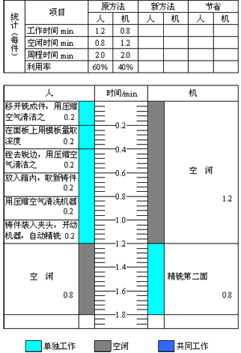
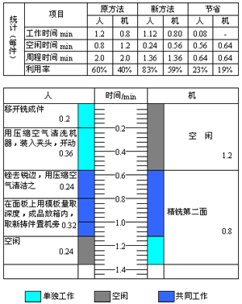
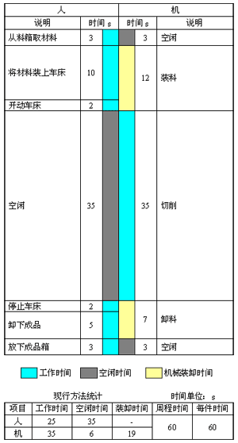
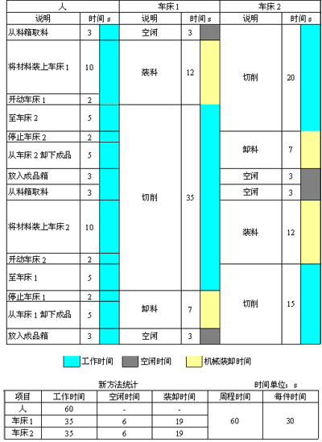

1 . 教学安排
2 . 操作分析的定义与类型
3 . 人机操作分析
 人机操作分析的意义与目的
人机操作分析的意义与目的
人机操作图的构成
人机操作程序图实例分析
闲余能量分析
4 . 联合操作分析
5 . 双手操作分析
6 . 思考与练习题
 返回课程学习首页
返回课程学习首页
人机操作程序图实例分析
例如：在立式铣床上精铣铸件的第二平面。
详细记录在立式铣床上精铣铸件的人机操作情况，如图6-2所示。由图可知，在工作中铣床有60%的时间没有工作，这是因为当工人操作时，机床停止工作；机床自动切削时，工人则无事可做。工人将工件夹紧在机床台面上和加工完后松开夹具、取下零件是必须在机床停止时才能进行的，但用压缩空气清洁零件，用样板检验工件的深度等是可以在机床开动中同时进行的。

图6-2 现行方法精铣铸件的人机操作图
因此要缩短其周程时间，应尽量利用机器工作的时间进行手工操作，如检查工作物、去除加工表面的毛刺，将加工完的工件放入成品盒，取出铸件做好加工前的准备，在放回工件的同时取出待加工件，用压缩空气吹洗己加工的铸件等。
图6-3为改进后的记录图，由图可见，重新安排工作后，不需增加设备和工具，仅在2min内就节省了工时0.64min，提高工效32%。

图6-3 新方法精铣铸件的人机操作图
此例着重于研究分析及改善如何减少等待或空闲，以缩短其周期时间。但如果经分析改善后，机器的周期时间仍较长，在每一操作周期内人仍有很多的空闲时间，这时改善的方法只有两种：一是增加其他工作，二是利用空闲多操作一台机床。
例如：在半自动车床上切削心棒。
用秒表观测现行方法，操作工人使用半自动车床切削心棒的各工作情况如图6-4所示。

图6-4 现行方法半自动车床切削心棒的人机操作图
在图6-4中，人的动作与机器的动作，在调配上虽己无法再改善，但仍存在着这样的问题，即操作者操作时，机器停止；机器工作时，操作者处于空闲，且操作者操作时间仅为25s，而机器则为35s。因为当机器工作时，人空闲，即每一周期内，操作者有35s的空闲，足够再操作另一台机器(25s)。这样即充分利用操作者的空闲时间，提高了工作效率，同时亦节省了人力。图6-5为其改良方法。

图6-5 新方法半自动车床切割心棒的人机操作图
由图6-5可知，工作周期时间虽未改变，两种方法均为60s，但改良方法中因同一人操作两台机器，故在60s内完成了两件，也就是每件心棒的加工时间降为30s，即总产量增加了50%。
此例说明，通过改善可以充分利用工人的空闲时间，即利用了工人的闲余能量。